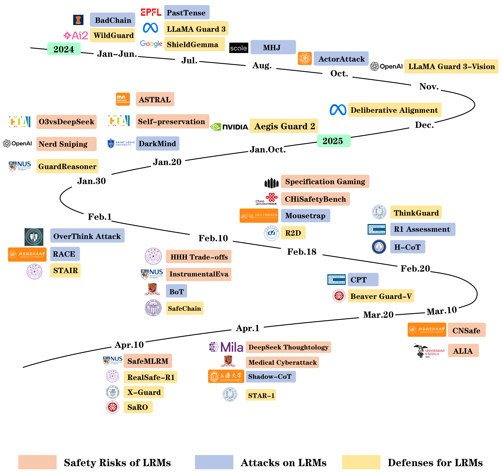

|
Cheng WANG I'm a third-year undergraduate student from National University of Singapore (NUS). I am fortunate to work closely with Prof. Yiwei Wang, Prof. Yujun Cai, Prof. Bryan Hooi, and Prof. Kai-Wei Chang. I am broadly interested in Natural Language Processing (NLP), with a particular focus on Trustworthy NLP and Reasoning in NLP. |

|
News
[2025.04] Our survey on LRMs Safety is on arxiv now, check out the paper and repo!
[2025.01] Our paper is accepted to NAACL 2025 Main Conference. [2025.01] I started my internship at Tiktok as an Algorithm Engineer Intern.
[2024.11] Our paper is accepted to COLING 2025. |
Research |
|

|
Safety in Large Reasoning Models: A Survey
Cheng Wang, Yue Liu, Baolong Bi , Duzheng Zhang, Zhongzhi Li, Junfeng Fang [pdf] Under Review |

|
Beyond the Last Layer: Improving Sentence Embeddings Elicited from LLMs through Contrastive Layer Information Fusion
Cheng Wang, Yiwei Wang, Bryan Hooi, Yujun Cai, Nanyun Peng, Kai-Wei Chang Under Review |

|
Tricking Retrievers with Influential Tokens: An Efficient Black-Box Corpus Poisoning Attack
Cheng Wang, Yiwei Wang, Yujun Cai, Bryan Hooi [pdf] NAACL 2025 Main Track |

|
Con-ReCall: Detecting Pre-training Data in LLMs via Contrastive Decoding
Cheng Wang, Yiwei Wang, Bryan Hooi, Yujun Cai, Nanyun Peng, Kai-Wei Chang [pdf] COLING 2025 |
Professional & Industry Experience
Tiktok | Singapore
National Universiyt of Singapore | Singapore |

|
Template is from Jon Barron
|